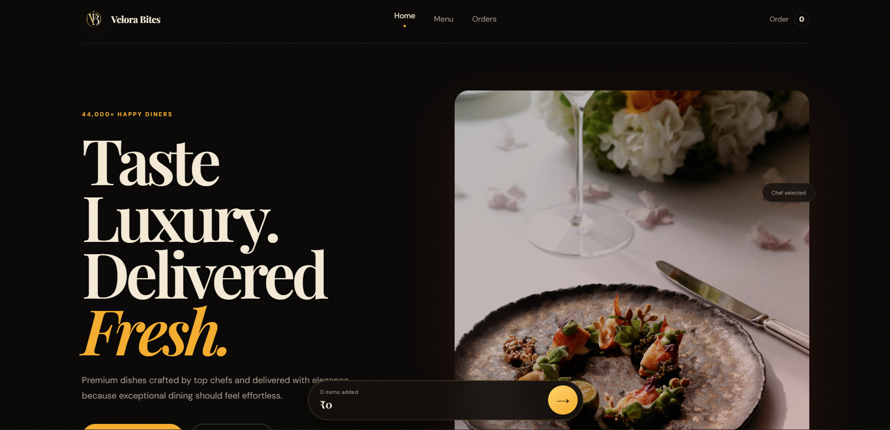
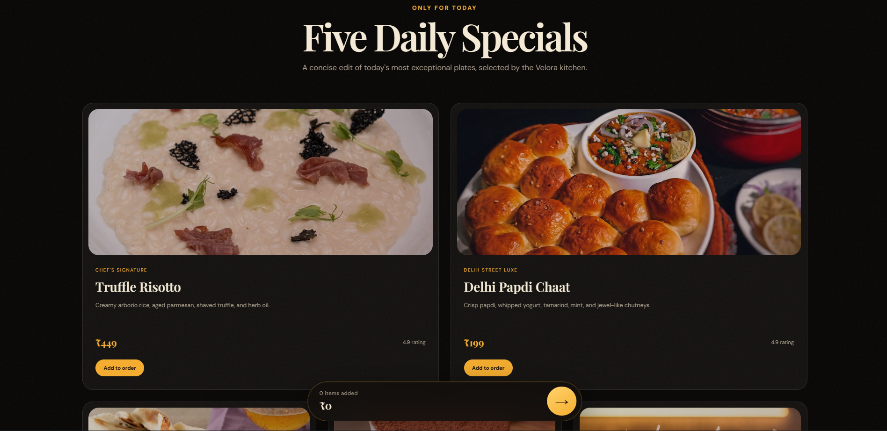
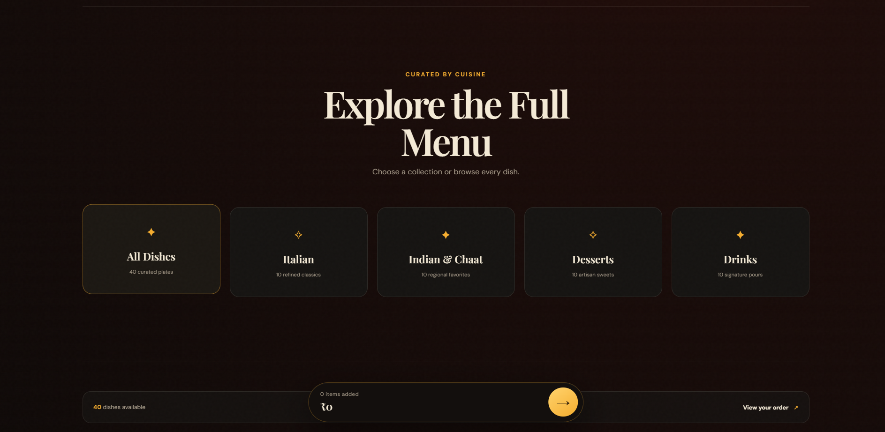
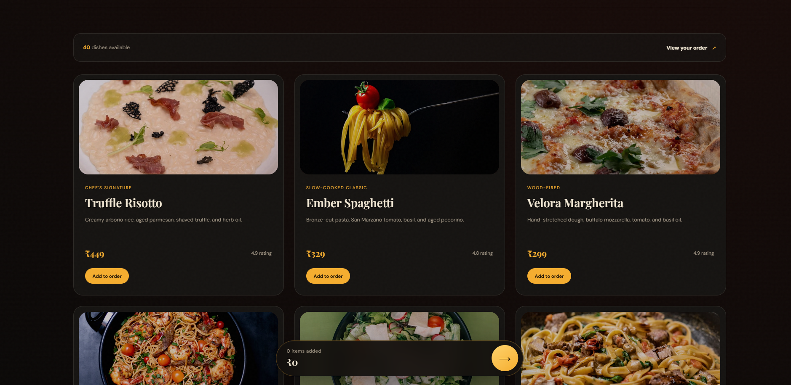
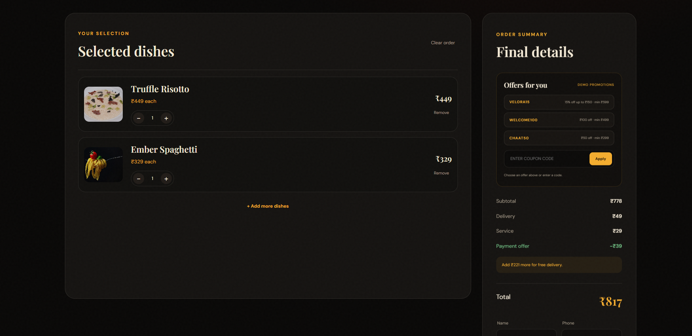
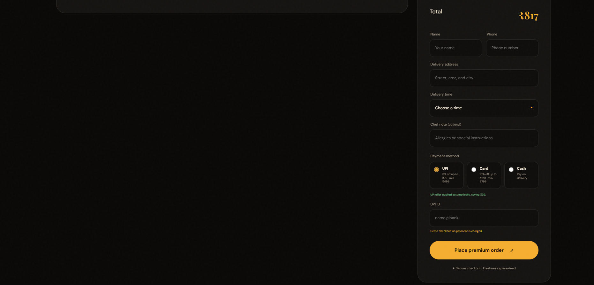

VELDORA-BITES
A production restaurant experience that turns the Velora Bites luxury design direction into a complete discovery, menu, cart, offers, and demo-order flow.

From luxury landing page to a complete ordering journey.
Challenge
Preserve the premium editorial identity while expanding a visual concept into a practical multi-page flow: discovery on Home, a dedicated full Menu, persistent order state, and a focused Orders experience.
Solution
A lightweight vanilla frontend separates discovery, browsing, and checkout into clear pages while sharing menu data and local cart state. The interface keeps INR pricing, responsive layouts, and the same dark-gold hospitality language throughout.
Safety decision: checkout remains demonstrative. The live portfolio project explicitly states that no payment is charged.
A homepage designed to sell the feeling before the catalog.


Forty dishes, one reusable browsing system.

Shared data
One menu dataset powers daily specials, full-menu rendering, prices, ratings, descriptions, and order line items.
Persistent cart
The order is stored locally, so quantity and subtotal survive navigation between Home, Menu, and Orders.
Responsive filtering
Category controls filter the menu without a route change while maintaining a visible dish count.
Clear conversion
A persistent order dock keeps current quantity, subtotal, and the next action visible during shopping.
The cart becomes a calm, premium checkout workspace.

Offers and delivery details without pretending to be a real payment gateway.

A small frontend architecture with product-level continuity.
Vanilla frontend
Semantic HTML, responsive CSS, and focused JavaScript keep the deployment simple and inspectable.
Local persistence
LocalStorage carries cart state across the multi-page flow and keeps prices synchronized with the current menu dataset.
Accessible interactions
Semantic navigation, labeled controls, live regions, keyboard-friendly forms, and responsive menus support the core journey.
Deploy-safe demo
The live experience demonstrates coupons, payment offers, order confirmation, and delivery details without processing real payments.